สำหรับ HR และผู้บริหารที่ดูแลระบบ — ทะเบียนพนักงาน ผังอำนาจอนุมัติ เงื่อนไขการลา โควตา รายงาน และบท ส่งมอบระบบ ท้ายเล่ม บอกว่าระบบประกอบด้วยอะไร ข้อมูลอยู่ที่ไหน และต้องดูแลอะไรเป็นรอบ
กดเมนู จัดการ ด้านล่างแชท — เปิดได้เฉพาะ HR และ ผู้บริหาร คนอื่นจะเห็น คุณไม่มีสิทธิ์เข้าถึงหน้านี้
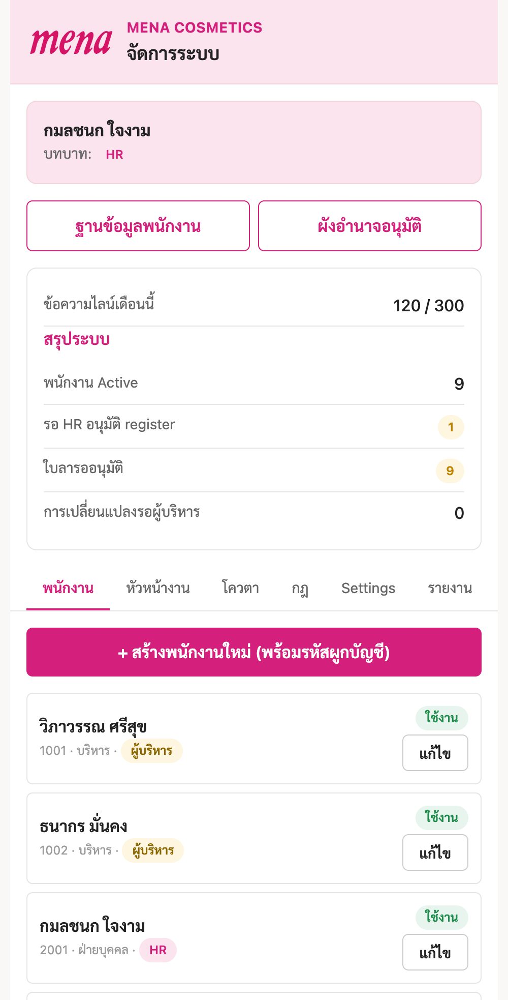
| ในกล่องสรุประบบ | ความหมาย |
|---|---|
| ข้อความไลน์เดือนนี้ | ใช้ไปกี่ข้อความจากโควตาเดือนนี้ของไลน์บริษัท (หัวข้อ 2) |
| พนักงาน Active | จำนวนคนที่ใช้งานได้ |
| รอ HR อนุมัติ register | คนที่ใช้รหัสจับคู่แล้ว รอ HR กดอนุมัติ (หัวข้อ 5) |
| ใบลารออนุมัติ | ใบลาทั้งบริษัทที่ยังไม่ตัดสินครบ |
| การเปลี่ยนแปลงรอผู้บริหาร | สิ่งที่ HR แก้ (กฎ / โควตา / Settings) ที่รอผู้บริหารอนุมัติ |
แท็บ พนักงาน กด แก้ไข ที่ชื่อใดก็ได้ เพื่อเปลี่ยน ระดับพนักงาน → บันทึกระดับ หรือกด พ้นสภาพ / ลาออก (ปิดการเข้าถึง) — คนที่พ้นสภาพเข้าระบบไม่ได้อีก ประวัติใบลายังอยู่ และกด รับกลับเข้าทำงาน (เปิดใช้อีกครั้ง) ได้ภายหลัง ผังอำนาจอนุมัติของเขาไม่ถูกลบ ระหว่างปิดบัญชีระบบข้ามเขาไปเอง
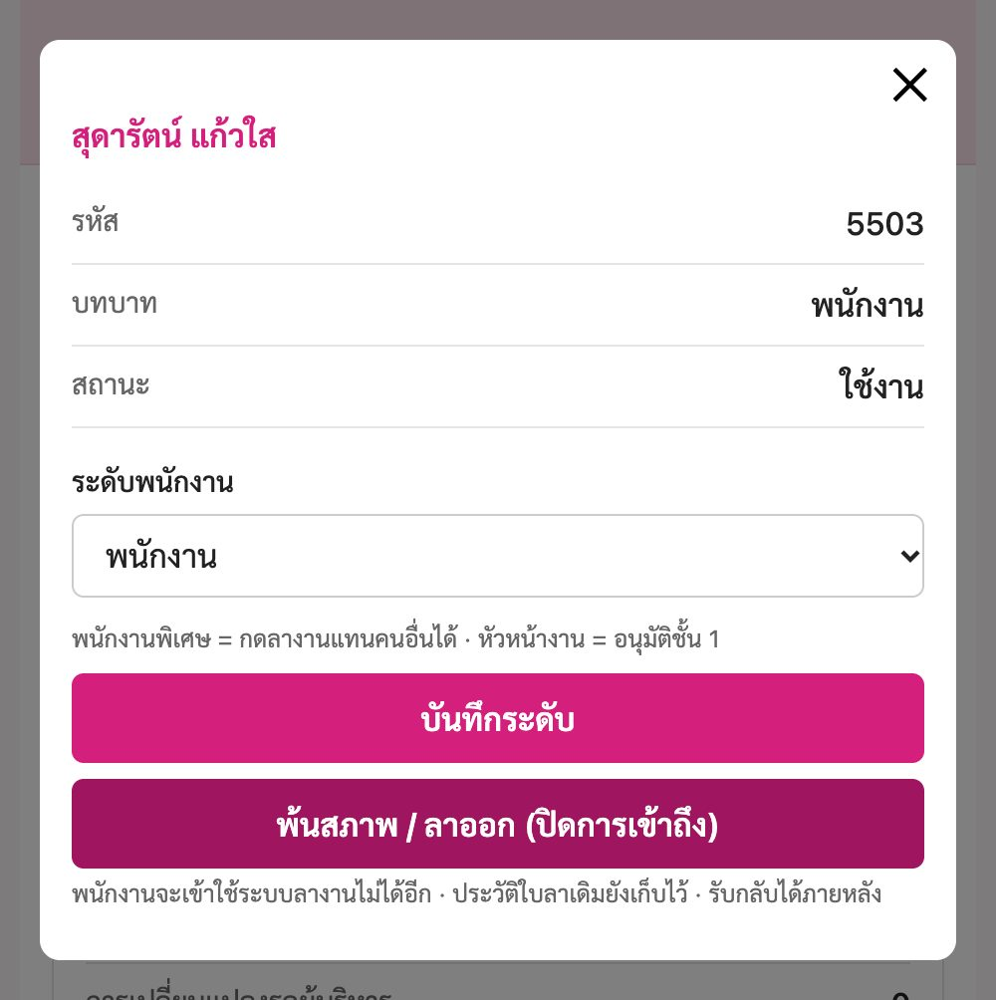
| ระดับ | ทำอะไรได้ |
|---|---|
| พนักงาน | ส่งใบลา ดูใบลาของตัวเอง |
| พนักงานพิเศษ | เหมือนพนักงาน + กดลาแทนคนอื่นได้ |
| หัวหน้างาน | อนุมัติชั้น 1 ของลูกน้องในผัง |
| HR | อนุมัติชั้น 2 ทุกใบ · เข้าหน้าจัดการ · ลาแทนคนอื่น · แก้กฎ/โควตา/Settings ต้องรอผู้บริหารอนุมัติ |
| ผู้บริหาร | อนุมัติชั้น 3 ของคนในสาย · ทำทุกอย่างของ HR แบบมีผลทันที · อนุมัติข้อเสนอของ HR · ตั้งผู้บริหารคนอื่น · ลาเองอนุมัติอัตโนมัติ |
ทุกการ์ดที่ระบบส่ง (ขออนุมัติ แจ้งผล เตือนซ้ำ) นับเป็นข้อความของบัญชีไลน์บริษัท แพ็กเกจของไลน์บริษัทกำหนดจำนวนข้อความต่อเดือนไว้ ถ้าหมด การ์ดทุกชนิดส่งไม่ออกทั้งบริษัท จนกว่าจะขึ้นเดือนใหม่หรืออัปเกรดแพ็กเกจ ระบบจึงโชว์สถานะไว้บนกล่องสรุประบบ
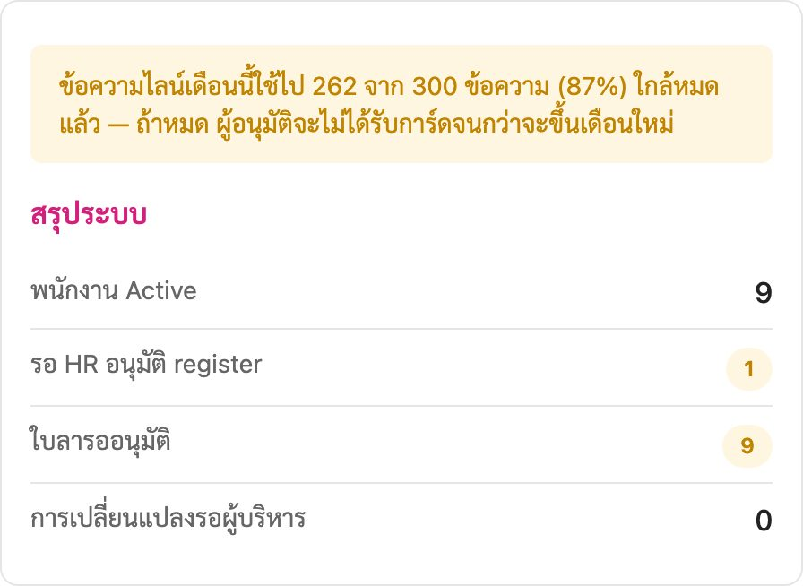
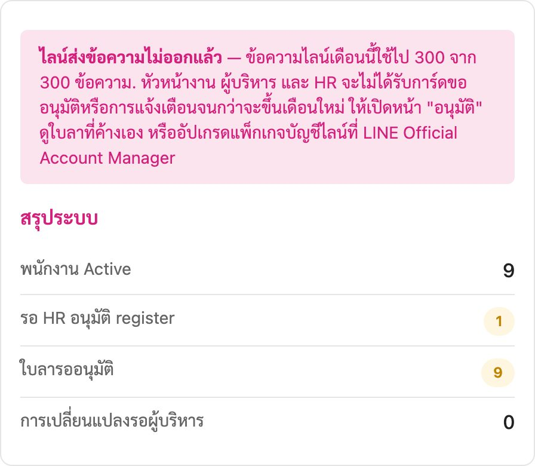
หน้าจัดการ → ฐานข้อมูลพนักงาน ตารางทุกคน (ยกเว้นคนที่พ้นสภาพ) พร้อมหัวหน้างาน ผู้บริหาร ระดับ และสถานะผูกไลน์
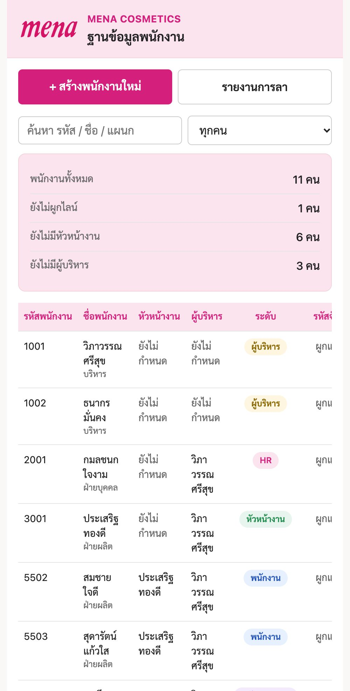
ชื่อ แผนก ตำแหน่ง ในตารางนี้ ยังไม่มีหน้าจอให้แก้ — ถ้าต้องแก้ ให้แก้ในชีต Users (หัวข้อ 12)
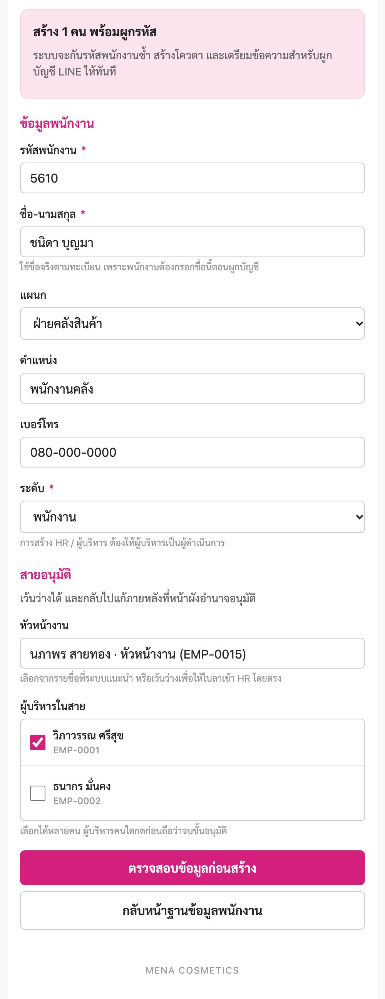
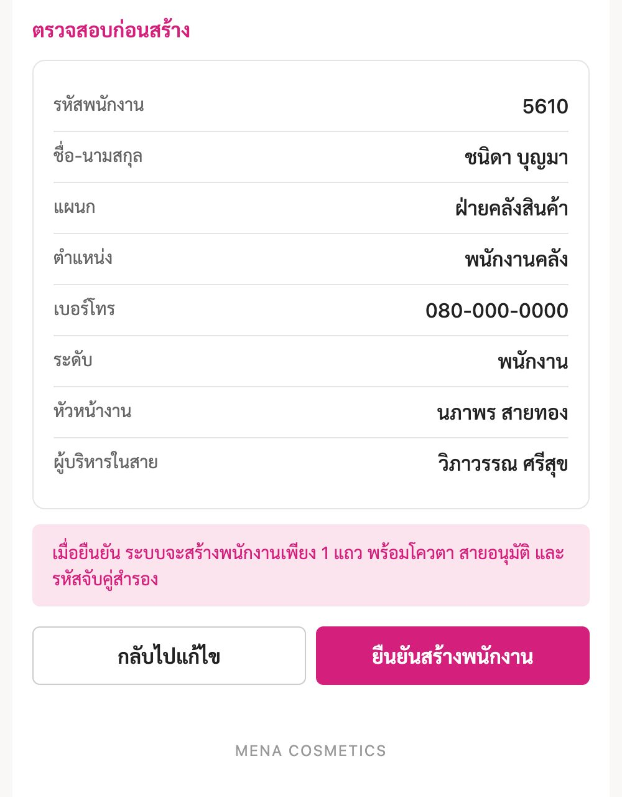
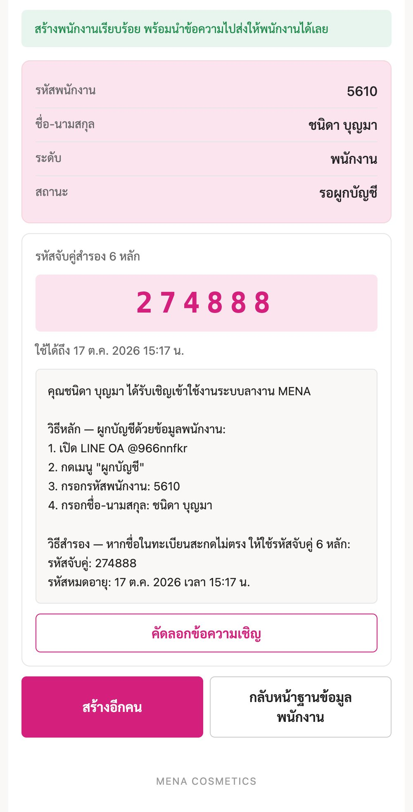
เมนูด้านล่างแชทไม่มีปุ่มชื่อนั้น — ให้บอกพนักงานเพิ่มว่า กดเมนู "ส่งใบลา" แล้วกดปุ่ม "ผูกบัญชีของฉัน" หรือกดปุ่มในข้อความต้อนรับที่ไลน์ส่งมาตอนเพิ่มเพื่อน
นำเข้าพนักงานทั้งบริษัทจากไฟล์ทะเบียนเป็นงานของผู้ดูแลระบบ ไม่มีปุ่มในหน้าจอ — คนที่นำเข้ามาจะมีสถานะรอผูกบัญชีเหมือนกัน
ใช้เมื่อพนักงานผูกด้วยรหัสพนักงาน + ชื่อไม่ผ่าน (เช่น ชื่อในทะเบียนสะกดไม่ตรง)
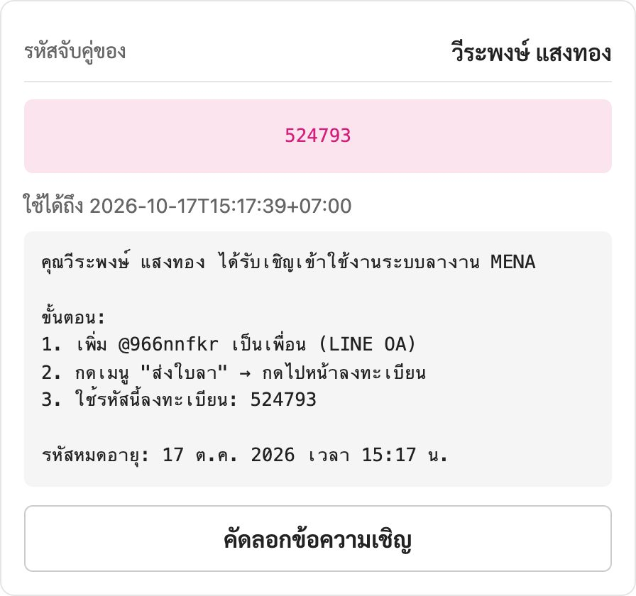
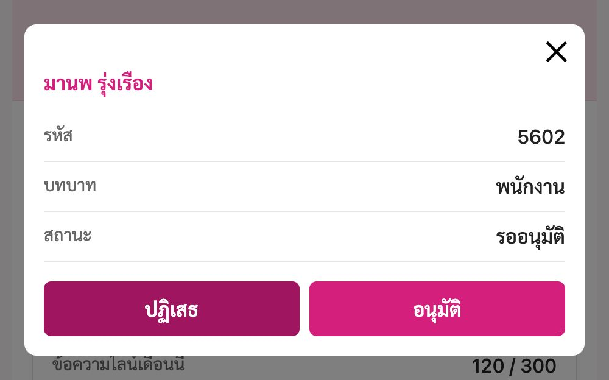
หลังส่งรหัสให้ใคร ให้กลับมาดูตัวเลข รอ HR อนุมัติ register ในหน้าจัดการ หรือแท็บพนักงาน แล้วกดอนุมัติ (กรณีรหัสของคนระดับ HR / ผู้บริหาร ผู้บริหารจะได้การ์ดแจ้งให้ยืนยัน)
พาพนักงานเข้าระบบครบทั้งบริษัทแล้ว ควรปิดการผูกบัญชีด้วยตัวเอง โดยตั้ง self_claim_enabled = FALSE ในชีต Settings หลังจากนั้นคนใหม่ผูกได้ทางรหัสจับคู่อย่างเดียว (กันคนนอกเดารหัสพนักงาน + ชื่อ)
หน้าจัดการ → ผังอำนาจอนุมัติ (หรือแตะแถวในฐานข้อมูลพนักงาน) — ตั้งว่าใบลาของพนักงานแต่ละคนวิ่งไปหาใคร
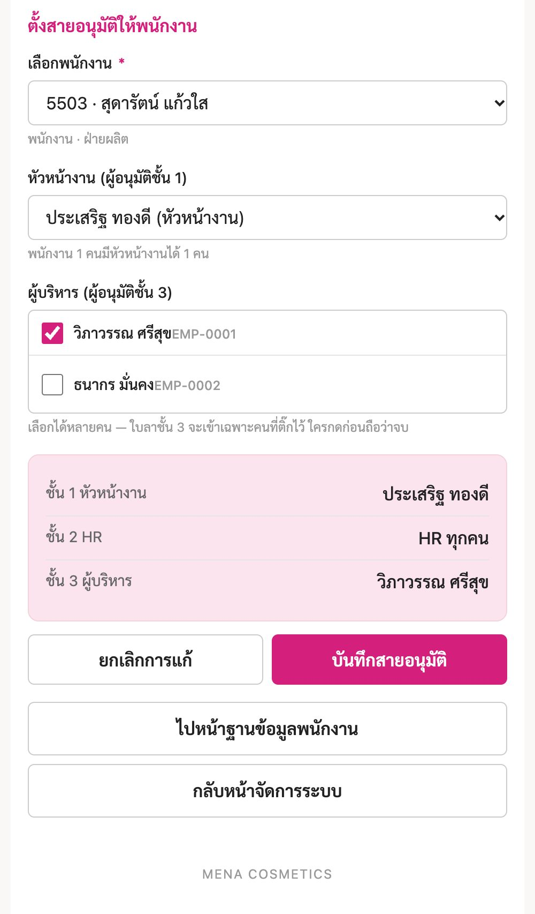
หน้าจัดการ → แท็บ กฎ — กฎที่นี่คือสิ่งที่พนักงานเห็นในขั้นที่ 1 ของการส่งใบลา และระบบใช้ตรวจตอนกดส่ง
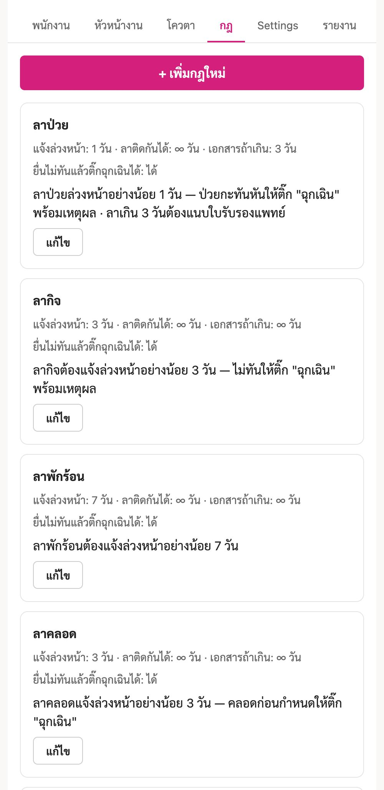
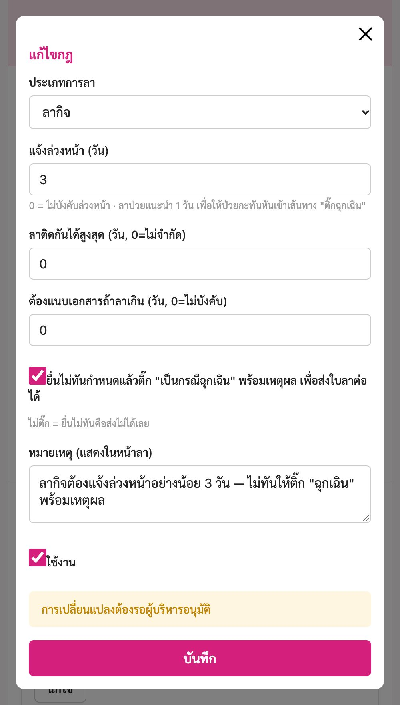
| ช่อง | ระบบใช้ยังไง |
|---|---|
| แจ้งล่วงหน้า (วัน) | วันเริ่มลาต้องห่างจากวันนี้อย่างน้อยเท่านี้ ไม่ทัน = ต้องติ๊กฉุกเฉิน · ลาป่วยยกเว้น — ป่วยวันนี้หรือย้อนหลังส่งได้เลยไม่ต้องติ๊ก |
| ลาติดกันได้สูงสุด (วัน) | 0 = ไม่จำกัด |
| ต้องแนบเอกสารถ้าลาเกิน (วัน) | ระบบนับแบบ ตั้งแต่ จำนวนนี้ขึ้นไป (ตั้ง 3 = ลา 3 วันก็ต้องแนบ) · ลาป่วยส่งก่อนแนบทีหลังได้ ประเภทอื่นต้องแนบตอนส่ง · 0 = ไม่บังคับ |
| ติ๊ก "ยื่นไม่ทันกำหนดแล้วติ๊กเป็นกรณีฉุกเฉิน…" | ไม่ติ๊ก = ประเภทนั้นยื่นไม่ทันคือส่งไม่ได้เลย |
| หมายเหตุ (แสดงในหน้าลา) | ข้อความที่พนักงานเห็นใต้เงื่อนไข — แก้ให้ตรงกับตัวเลขจริงเสมอ |
| ใช้งาน | เอาติ๊กออก = ปิดกฎนั้น |
กฎตั้งต้น: ลาป่วยแจ้งล่วงหน้า 1 วัน (กะทันหันส่งได้) แนบใบแพทย์ตั้งแต่ 3 วัน · ลากิจ 3 วัน · ลาพักร้อน 7 วัน · ลาคลอด 3 วัน · ลาช่วยภรรยาดูแลบุตร / ลาเพื่อทำหมัน / ลาเพื่อรับราชการทหาร 7 วัน · ลาเพื่อรับการฝึกอบรม 3 วัน · ลาอุปสมบท 15 วัน — ลาย้อนหลังได้เฉพาะลาป่วยและลาคลอด (ฝังในระบบ ไม่ได้ตั้งที่กฎ)
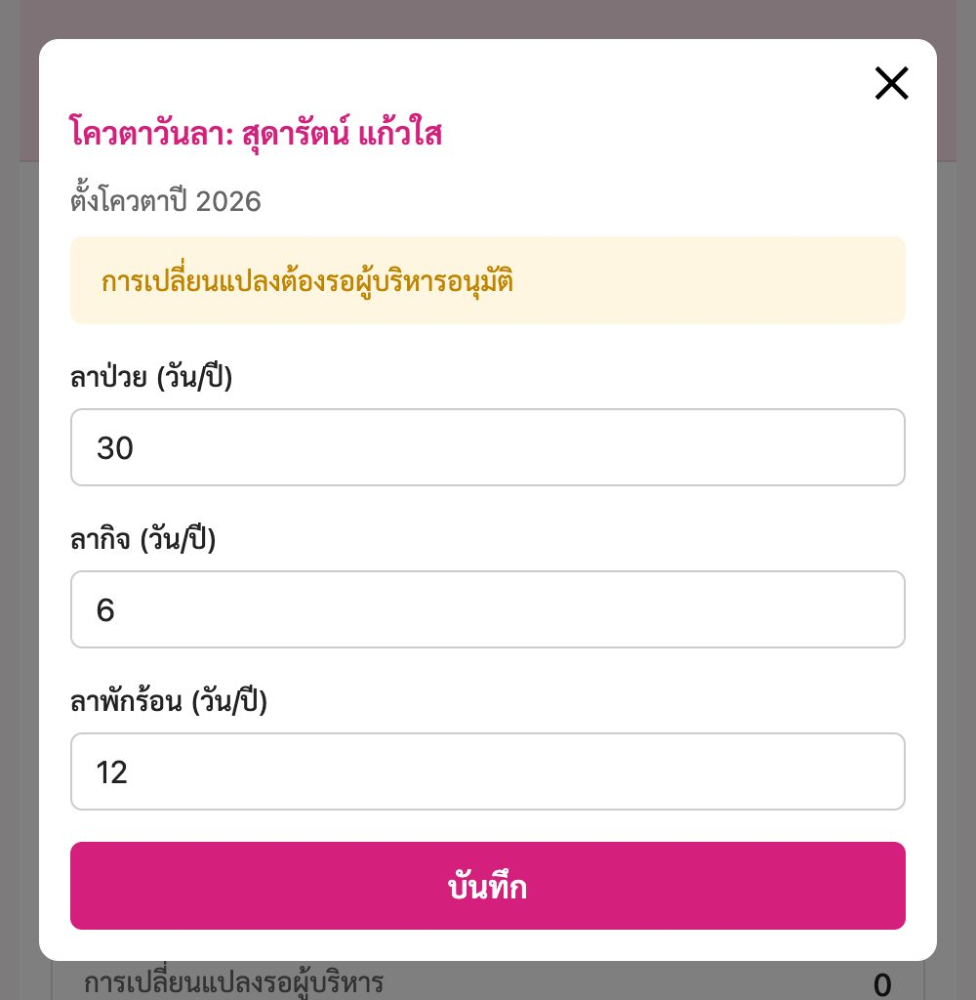
แท็บ Settings ทุกช่องขึ้นว่า (ไม่เปลี่ยน) — กรอกเฉพาะช่องที่จะเปลี่ยน แล้วกด บันทึก ช่องที่เว้นว่างไม่ถูกแตะ (หน้านี้ไม่แสดงค่าปัจจุบัน ดูค่าปัจจุบันได้ในชีต Settings หัวข้อ 12)
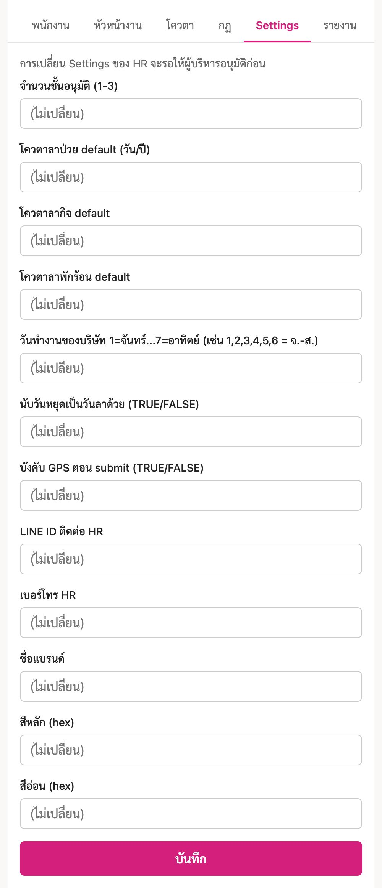
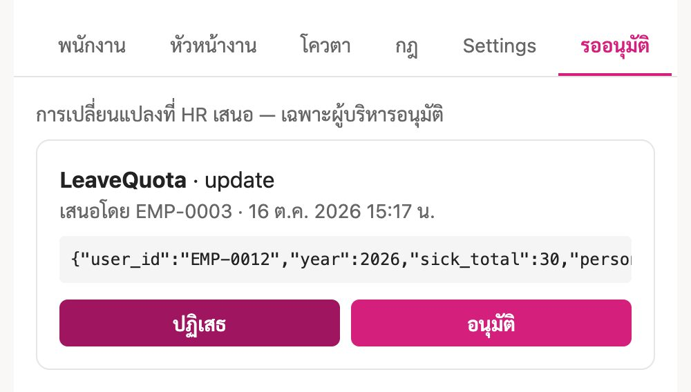
| อ่านการ์ดในแท็บรออนุมัติ | หมายถึง |
|---|---|
| LeaveQuota · update | HR ขอตั้งโควตา — ในกรอบ user_id = รหัสระบบของพนักงาน (EMP-xxxx), sick/personal/vacation_total = ลาป่วย/ลากิจ/ลาพักร้อน |
| LeaveRules | HR ขอเพิ่มหรือแก้กฎการลา |
| Settings · update | HR ขอแก้ค่าใน Settings ชื่อในกรอบคือชื่อค่าในชีต Settings |
| เสนอโดย EMP-xxxx | รหัสระบบของ HR ผู้เสนอ ดูชื่อได้จากฐานข้อมูลพนักงาน/ชีต Users |
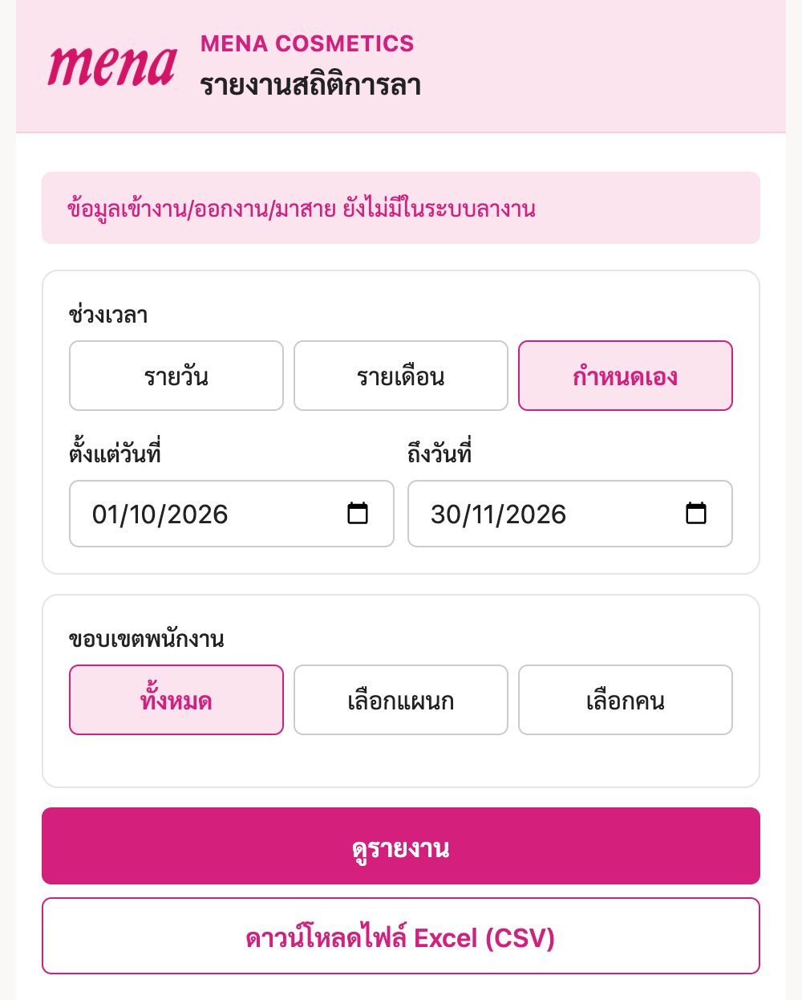
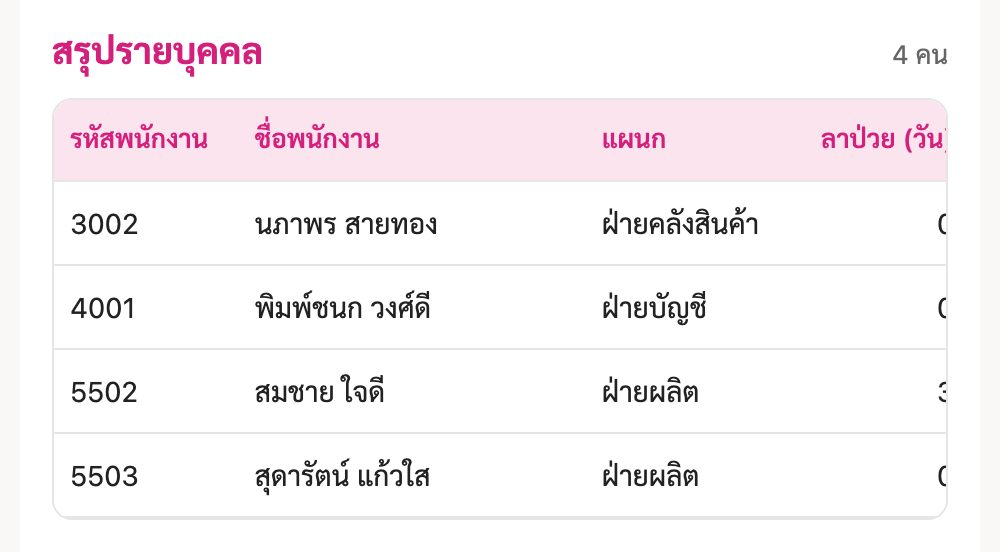
| ส่วน | ทำหน้าที่ | ข้อมูลอยู่ที่ไหน / เข้าถึงยังไง |
|---|---|---|
| LINE Official Account @966nnfkr | ช่องทางเดียวที่พนักงานใช้ — เมนูด้านล่างแชท 5 ปุ่ม และการ์ดแจ้งเตือนทุกชนิด | จัดการที่ LINE Official Account Manager ด้วยบัญชีไลน์ของผู้ดูแล OA (เมนู แพ็กเกจข้อความ สมาชิก) · ตั้งค่าเชื่อมระบบอยู่ใน LINE Developers ช่องเดียวกัน |
| หน้าเว็บในไลน์ | หน้าจอทุกหน้าในคู่มือ (ส่งใบลา อนุมัติ จัดการ ฯลฯ) เปิดผ่านไลน์เท่านั้น | เป็นหน้าเว็บ ไม่เก็บข้อมูลพนักงานในตัว ข้อมูลทุกอย่างอ่าน/เขียนผ่านตัวกลางไปที่ Google Sheet |
| ตัวกลาง (Google Apps Script) | สมองของระบบ — ตรวจสิทธิ์ ตรวจเงื่อนไข ส่งการ์ดไลน์ เตือนซ้ำทุกชั่วโมง รีเซ็ตโควตาทุกต้นปี | อยู่ในบัญชี Google ที่ติดตั้งระบบ เก็บกุญแจเชื่อมไลน์ไว้ข้างใน — ไม่ต้องเข้าไปแก้ ถ้าจะแก้ให้ติดต่อผู้พัฒนา |
| Google Sheet "mena-leave - Database" | ฐานข้อมูลทั้งหมด: พนักงาน ผังอำนาจ ใบลา โควตา กฎ ค่าตั้ง ประวัติ | เปิดด้วย Google Sheets ของบัญชีที่ได้รับแชร์ · แต่ละแท็บเก็บอะไรดูหัวข้อ 12 · แชร์ให้เฉพาะคนที่ต้องดูแล เพราะมีข้อมูลส่วนตัวพนักงาน |
| Google Drive โฟลเดอร์ "mena-leave - Storage" | เก็บรูปที่แนบใบลา (โฟลเดอร์ย่อย leave-proofs) และไฟล์รายงาน CSV (reports) | ไฟล์แต่ละไฟล์เปิดได้ด้วยลิงก์ (เพื่อให้รูปขึ้นในการ์ดไลน์) — อย่าแชร์ลิงก์โฟลเดอร์ทั้งโฟลเดอร์ให้คนนอก · ห้ามย้ายหรือเปลี่ยนชื่อโฟลเดอร์ |
ลบหรือเปลี่ยนชื่อแท็บในชีต · ลบ/สลับหัวคอลัมน์แถวแรก · ลบชีตหรือโฟลเดอร์ Drive ของระบบ · เปลี่ยนเจ้าของไฟล์โดยไม่แจ้งผู้พัฒนา · ลบบัญชีไลน์ OA หรือเปลี่ยนเมนูด้านล่างแชทเอง
ชีตมี 11 แท็บ ชื่อแท็บและหัวคอลัมน์เป็นภาษาอังกฤษตามที่ระบบใช้ ห้ามเปลี่ยน · ป้ายในตาราง: แก้มือได้ แก้ในชีตได้เลย ระบบอ่านค่าใหม่เอง · แก้ได้บางช่อง · ห้ามแก้มือ แก้ผ่านหน้าจอเท่านั้น (ข้อมูลผูกกันหลายแท็บ แก้ช่องเดียวตัวเลขจะเพี้ยน)
| แท็บ | เก็บอะไร · 1 แถว = อะไร | คอลัมน์สำคัญ | แก้มือ |
|---|---|---|---|
| Users | ทะเบียนพนักงาน · 1 แถว = พนักงาน 1 คน | user_id รหัสระบบ EMP-xxxx (คนละอันกับรหัสพนักงาน) · emp_code รหัสพนักงานของบริษัท · display_name ชื่อ-นามสกุล (ใช้จับคู่ตอนผูกบัญชี) ·
department position phone email ·
role ระดับ: USER=พนักงาน · SPECIAL=พนักงานพิเศษ · SUPERVISOR=หัวหน้างาน · ADMIN=HR · OWNER=ผู้บริหาร ·
status: active=ใช้งาน · invited=รอผูกบัญชี · pending=ใช้รหัสจับคู่แล้วรออนุมัติ · inactive=พ้นสภาพ ·
is_supervisor TRUE = เป็นหัวหน้างาน · line_user_id บัญชีไลน์ที่ผูก (ว่าง = ยังไม่ผูก) |
บางช่อง แก้ได้: ชื่อ แผนก ตำแหน่ง เบอร์ อีเมล รหัสพนักงาน (ห้ามซ้ำ) · ห้ามแก้: user_id, line_user_id, role, status, is_supervisor (ใช้หน้าจอ) |
| Approvers | ผังอำนาจอนุมัติ · 1 แถว = ผู้อนุมัติ 1 คนของพนักงาน 1 คนในชั้นหนึ่ง | user_id พนักงาน · approver_user_id ผู้อนุมัติ · level 1 = หัวหน้างาน · 3 = ผู้บริหาร (ชั้น HR ไม่เก็บที่นี่) ·
valid_to ว่าง = ใช้อยู่ · มีวันที่ = เลิกใช้แล้ว (เก็บเป็นประวัติ) |
ห้ามแก้มือ ใช้หน้าผังอำนาจอนุมัติ — หน้าจอปรับใบที่ค้างอยู่ให้ด้วย |
| LeaveRequests | ใบลาทุกใบ · 1 แถว = ใบลา 1 ใบ หรือใบขอยกเลิก 1 ใบ | leave_id เลขที่ LV-ปีเดือนวัน-ลำดับ · record_type leave=ใบลา · cancel=ใบขอยกเลิก (ชี้ใบเดิมที่ parent_leave_id) ·
leave_type sick=ลาป่วย · personal=ลากิจ · vacation=ลาพักร้อน · maternity · paternity · sterilization · military · training · ordination = ลาอื่น ๆ ตามกฎหมาย ·
date_from date_to · days วันที่หัก (ลาชั่วโมงเป็นเศษ) · leave_unit day/hour + time_from time_to hours ·
reason (ลาแทนจะมี "(ลาแทนโดย …)") · stage1_status…stage3_status: pending=รอ · approved=อนุมัติ · rejected=ไม่อนุมัติ · skipped=ข้าม · withdrawn=ถอน ·
stage1_by/_at/_note ใครตัดสิน เมื่อไหร่ หมายเหตุ ·
final_status: pending · approved · rejected · withdrawn=ผู้ลาถอน · cancelled=ยกเลิกหลังอนุมัติ ·
is_emergency emergency_reason แจ้งไม่ทัน/ลากะทันหัน · gps_missing_reason ไม่ว่าง = ไม่มีพิกัด ·
attachment_url รูปตอนส่ง · extra_attachments รูปที่แนบเพิ่ม · doc_pending ลาป่วยรอใบแพทย์ ·
doc_request_status requested=ขอเอกสารอยู่ · submitted=ผู้ลาแนบแล้ว · closed=ปิด · reminder_count ถูกเตือนกี่ครั้ง · hr_fallback TRUE = HR ตัดสินแทนผู้บริหาร |
ห้ามแก้มือ สถานะผูกกับโควตาที่กันไว้ แก้เองแล้วโควตาเพี้ยน · อ่านอย่างเดียว |
| LeaveQuota | โควตาวันลา · 1 แถว = พนักงาน 1 คนใน 1 ปี (quota_id = Q-ปี-EMP-xxxx) |
year · sick_total personal_total vacation_total โควตาทั้งปี ·
*_used ใช้ไปแล้ว (อนุมัติครบ) · *_reserved กันไว้ให้ใบที่รออนุมัติ ·
คงเหลือที่พนักงานเห็น = total − used − reserved (ไม่ติดลบ) |
บางช่อง แก้ได้: *_total (แนะนำแก้ผ่านแท็บโควตา) · ห้ามแก้: *_used, *_reserved, user_id, year |
| LeaveRules | เงื่อนไขการลา · 1 แถว = กฎของประเภทลา 1 ประเภท (หรือ all = ทุกประเภท) | advance_notice_days แจ้งล่วงหน้า · max_consecutive_days ลาติดกันสูงสุด (0=ไม่จำกัด) ·
doc_required_above_days ตั้งแต่กี่วันต้องแนบเอกสาร (0=ไม่บังคับ) · note ข้อความที่พนักงานเห็น ·
is_active · allow_emergency ยื่นไม่ทันติ๊กฉุกเฉินได้ไหม |
แก้มือได้ ตัวเลข/ข้อความ/TRUE-FALSE · ห้ามแก้ rule_id, leave_type · แนะนำแก้ผ่านแท็บกฎเพื่อมีบันทึก |
| Settings | ค่าตั้งของระบบ · 1 แถว = ค่า 1 ตัว (key ชื่อค่า · value ค่า · note คำอธิบาย) |
ดูตารางค่าสำคัญด้านล่าง | แก้มือได้ แก้เฉพาะช่อง value · มีผลภายใน 5 นาที |
| Pairing_Codes | รหัสจับคู่ 6 หลัก · 1 แถว = รหัสที่ออก 1 ครั้ง | code · for_user_id ของใคร · expires_at หมดอายุ · status: active=ยังใช้ได้ · redeemed=ใช้แล้ว · expired=หมดอายุ |
ห้ามแก้มือ ออกรหัสใหม่จากหน้าจอแทน |
| Pending_Changes | สิ่งที่ HR ขอเปลี่ยน รอผู้บริหาร · 1 แถว = ข้อเสนอ 1 ครั้ง | target_entity เรื่องอะไร (LeaveQuota / LeaveRules / Settings) · payload_json ค่าที่ขอ · status: pending · approved · rejected · decided_by |
ห้ามแก้มือ อนุมัติที่แท็บรออนุมัติ |
| Audit_Log | ประวัติการกระทำ · 1 แถว = 1 การกระทำ (ใคร ทำอะไร กับอะไร เมื่อไหร่) | timestamp · actor_user_id · action เช่น leave_submit · leave_approve_s1 · set_quota · target_id |
ห้ามแก้มือ หลักฐานย้อนหลัง ห้ามลบ |
| Logs | บันทึกการทำงาน/ข้อผิดพลาดของระบบ สำหรับผู้พัฒนาไล่ปัญหา | level INFO / WARN / ERROR · message |
ไม่ต้องแตะ ลบแถวเก่ามาก ๆ ได้ถ้าชีตใหญ่ |
| Supervisors | ผังหัวหน้างานแบบเก่า เลิกใช้แล้ว (ย้ายไป Approvers) เก็บไว้ดูย้อนหลัง | — | ห้ามแก้มือ แก้แล้วไม่มีผล |
| key | ค่าตั้งต้น | ใช้ทำอะไร |
|---|---|---|
default_sick_total / default_personal_total / default_vacation_total | 30 / 6 / 10 | โควตาที่ให้คนใหม่ และใช้สร้างโควตาปีใหม่ทุก 1 ม.ค. |
work_days | 1,2,3,4,5,6 | วันทำงาน 1=จันทร์ … 7=อาทิตย์ — วันนอกนี้ไม่นับเป็นวันลา และไม่นับเวลาเตือน |
count_weekends_as_leave | FALSE | TRUE = นับวันหยุดเป็นวันลาด้วย |
work_start / work_end | 08:30 / 17:30 | เวลางาน — ใช้กับลาเป็นชั่วโมงและนับเวลาเตือนซ้ำ |
hours_per_day · lunch_start / lunch_end · hourly_leave_types | 8 · 12:00/13:00 · sick,personal,vacation | ลาเป็นชั่วโมง: กี่ชั่วโมง = 1 วัน · ช่วงพักไม่นับ · ประเภทที่ลาชั่วโมงได้ |
reminder_hours · reminder_enabled | 4 · TRUE | เงียบกี่ชั่วโมงทำงานถึงเตือนซ้ำ · FALSE = ปิดการเตือนทั้งระบบ |
emergency_reason_min | 10 | เหตุผลกรณีฉุกเฉินขั้นต่ำกี่ตัวอักษร |
gps_required | TRUE | FALSE = ไม่บังคับเหตุผลเมื่อเปิด GPS ไม่ได้ |
self_claim_enabled | TRUE | FALSE = ปิดการผูกบัญชีด้วยรหัสพนักงาน + ชื่อ (เหลือรหัสจับคู่อย่างเดียว) |
pairing_code_ttl_hours | 24 | อายุรหัสจับคู่ (ชั่วโมง) |
quota_reset_month / quota_reset_day | 1 / 1 | วันที่ระบบสร้างโควตาปีใหม่ |
support_line_id / support_phone | @966nnfkr / ว่าง | ช่องทางติดต่อ HR ที่โชว์ในหน้าคู่มือ |
brand_name · brand_logo_url · brand_color_primary / brand_color_tint | MENA COSMETICS | ชื่อ โลโก้ สีบนการ์ดไลน์ |
approval_levels · approval_stage1_role… · attachment_required_above_days | — | ไม่มีผลกับระบบปัจจุบัน ไม่ต้องแก้ |
| เมื่อไหร่ | ระบบทำเอง | HR ต้องทำ |
|---|---|---|
| ทุกต้นปี (1 ม.ค.) | เที่ยงคืนวันที่ 1 มกราคม (ตามค่า quota_reset_month/day) ระบบสร้างแถวโควตาปีใหม่ให้ ทุกคนที่สถานะใช้งาน ด้วยค่าตั้งต้นใน Settings (30 / 6 / 10) · ใช้ไปและรออนุมัติเริ่มที่ 0 · ไม่ยกวันลาพักร้อนที่เหลือมาปีใหม่ · โควตาปีเก่ายังอยู่ในชีตเป็นประวัติ | ถ้าบางคนได้โควตาไม่เท่าค่าตั้งต้น (อายุงาน ยกยอดพักร้อน) ต้องตั้งรายคนใหม่ทุกปีที่แท็บโควตา · อยากเปลี่ยนค่าตั้งต้นทั้งบริษัท ให้แก้ default_* ใน Settings ก่อน 1 ม.ค. · ใบลาข้ามปี (ยื่นธันวาคมลามกราคม) ระบบสร้างโควตาปีหน้าให้เองตอนยื่น |
| ทุกเดือน | นับข้อความไลน์ที่ใช้ไป โชว์ที่กล่องสรุประบบ | ดูแถบโควตาไลน์ต้นเดือน/กลางเดือน · ถ้าขึ้นแถบเหลืองหรือแดงบ่อย ให้ผู้ดูแลบัญชีไลน์บริษัทอัปเกรดแพ็กเกจ ที่ LINE Official Account Manager (เมนูตั้งค่า → การชำระเงิน/แพ็กเกจ) — แพ็กเกจฟรีส่งข้อความได้จำกัดต่อเดือน พอหมดการ์ดขออนุมัติจะไม่เด้งจนขึ้นเดือนใหม่ (บริษัทเคยเจอจริงช่วงปลายกันยายน 2569 ใบลาค้างหลายวัน) |
| ทุกวัน | เที่ยงคืนปิดรหัสจับคู่ที่หมดอายุ · ทุกชั่วโมงในเวลางานส่งการ์ดเตือนใบที่ค้าง | — |
| มีพนักงานเข้า / ออก / ย้ายแผนก | — | สร้างพนักงานใหม่ (หัวข้อ 4) · พ้นสภาพ (หัวข้อ 1) · แก้ผังอำนาจ (หัวข้อ 6) · เปลี่ยนหัวหน้าก่อนคนเก่าออก |
| พาเข้าระบบครบทั้งบริษัทแล้ว | — | ตั้ง self_claim_enabled = FALSE (หัวข้อ 5) |
ใช้บัญชีไลน์จริงของคนในบริษัท ทดสอบด้วยใบลาวันที่ล่วงหน้า แล้วถอนทิ้งหลังทดสอบ · ติ๊กช่องขวาเมื่อได้ผลตามที่เขียน
| # | ทดสอบยังไง | ต้องได้ผล | ผ่าน |
|---|---|---|---|
| 1 | พนักงานเพิ่มเพื่อนไลน์บริษัท แล้วผูกบัญชีด้วยรหัสพนักงาน + ชื่อ | ขึ้น "ผูกบัญชีเรียบร้อย" พร้อมชื่อ/แผนกถูกคน · HR ได้การ์ดแจ้ง | ☐ |
| 2 | พนักงานกดเมนู ส่งใบลา ดูขั้นที่ 1 | โควตาคงเหลือ 3 ประเภทตรงกับที่บริษัทให้ · เงื่อนไขตรงกับกฎ | ☐ |
| 3 | ส่งลากิจทั้งวัน ล่วงหน้าเกิน 3 วัน | ได้เลขที่ใบลา + การ์ดยืนยัน · หัวหน้างานได้การ์ดขออนุมัติชั้น 1 · HR ได้สำเนา | ☐ |
| 4 | หัวหน้างานกด ✅ อนุมัติ ในการ์ด → HR อนุมัติชั้น 2 → ผู้บริหารในสายอนุมัติชั้น 3 | ผู้ลาได้การ์ดทุกชั้น · สุดท้าย "ใบลาได้รับอนุมัติแล้ว" · โควตาลากิจลดลงตามจำนวนวัน | ☐ |
| 5 | ส่งอีกใบ แล้วหัวหน้างานกด ❌ ไม่อนุมัติ โดยไม่พิมพ์เหตุผล แล้วพิมพ์เหตุผลกดใหม่ | ครั้งแรกระบบไม่ยอม · ครั้งที่สองใบเป็น "ปฏิเสธ" ผู้ลาเห็นเหตุผล · HR และผู้บริหารได้รายงานการปฏิเสธ | ☐ |
| 6 | ส่งลาเป็นชั่วโมง 13:00–15:00 | หักโควตา 0.25 วัน · ใบลาแสดง "2 ชม. (13:00-15:00 น.)" | ☐ |
| 7 | ส่งลากิจวันพรุ่งนี้ | ต้องติ๊ก "เป็นกรณีฉุกเฉิน" + เหตุผลก่อนส่งได้ · ผู้อนุมัติเห็นแถบแจ้งไม่ทันกำหนด | ☐ |
| 8 | ส่งลาป่วยวันนี้ 3 วัน ไม่แนบรูป แล้วแนบรูปทีหลังที่ใบลาของฉัน | ส่งได้ทันที ติดป้ายลากะทันหัน · ผู้อนุมัติเห็น "ยังไม่มีใบรับรองแพทย์" · แนบแล้วผู้อนุมัติได้การ์ดแจ้ง | ☐ |
| 9 | ผู้อนุมัติกด "ขอเอกสารเพิ่มจากผู้ลา" พร้อมพิมพ์สิ่งที่ต้องการ | ผู้ลาได้การ์ดขอเอกสาร · ใบยังรออนุมัติ · แนบแล้วขึ้น "ผู้ลาแนบเอกสารที่ขอแล้ว" | ☐ |
| 10 | ผู้ลาถอนใบที่ยังรออนุมัติ | สถานะ "ถอนแล้ว" · ใบหายจากหน้าอนุมัติ · โควตาที่กันไว้คืน | ☐ |
| 11 | ผู้ลากด "ขอยกเลิกวันลา" ใบที่อนุมัติแล้ว แล้วผู้อนุมัติอนุมัติครบ | ใบเดิมเป็น "ยกเลิกแล้ว" · โควตาคืน | ☐ |
| 12 | ปล่อยใบค้างที่ชั้นหนึ่งเกิน 4 ชั่วโมงทำงาน | ผู้อนุมัติชั้นนั้นได้การ์ด "เตือนครั้งที่ 1" · ถ้าค้างที่ผู้บริหาร HR ได้การ์ดเตือนคู่และตัดสินแทนได้ | ☐ |
| 13 | HR สร้างพนักงานใหม่ 1 คน พร้อมหัวหน้างานและผู้บริหาร | ได้รหัสจับคู่ + ข้อความเชิญ · คนนั้นโผล่ในฐานข้อมูลพนักงานพร้อมสายอนุมัติ | ☐ |
| 14 | HR ออกรหัสจับคู่ → พนักงานใช้รหัส → HR กดอนุมัติ | พนักงานส่งใบลาได้ | ☐ |
| 15 | HR แก้โควตาของพนักงาน 1 คน → ผู้บริหารอนุมัติที่แท็บรออนุมัติ | ก่อนผู้บริหารกด โควตาไม่เปลี่ยน · หลังกด พนักงานได้การ์ดโควตาใหม่และเห็นในหน้าส่งใบลา | ☐ |
| 16 | HR เปิดรายงาน รายเดือน ทั้งหมด แล้วดาวน์โหลด CSV | ยอดวันลาตรงกับใบที่อนุมัติ/รออนุมัติในเดือนนั้น · ไฟล์เปิดใน Excel อ่านภาษาไทยได้ | ☐ |
| 17 | พนักงานทั่วไปกดเมนู จัดการ | ขึ้น "คุณไม่มีสิทธิ์เข้าถึงหน้านี้" | ☐ |
| 18 | HR พ้นสภาพพนักงานทดสอบ 1 คน แล้วให้คนนั้นกดส่งใบลา | ส่งไม่ได้ ขึ้นว่าบัญชีพ้นสภาพ · กดรับกลับแล้วส่งได้อีก | ☐ |
| 19 | HR เปิดหน้าจัดการดูกล่องสรุประบบ | เห็นบรรทัด "ข้อความไลน์เดือนนี้" ตรงกับตัวเลขใน LINE Official Account Manager | ☐ |
| 20 | ผู้บริหาร/HR เปิด Google Sheet และโฟลเดอร์ Drive ของระบบ | เปิดได้ด้วยบัญชีของบริษัท เห็น 11 แท็บตามหัวข้อ 12 | ☐ |